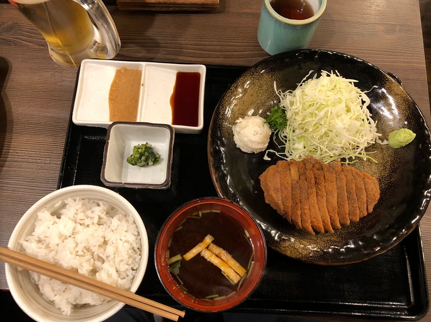

Food - Dishes to Try
Japan is known for its sushi, tempura, fugu fish, and wagyu beef, but it has so much more to offer when it comes to food. Here are a few that you may not be familiar with:
Chirashi
A cousin of sushi, chirashi is sliced, raw fish (sashimi) that lies on top of a bed of sushi rice. Being a seaside country, the chirashi in Japan is especially delicious,
as it has a fresh taste. It is also known as "chirashizushi".
Takoyaki
Takoyaki is a popular street food in the Kansai region of Japan. It is a ball of fried batter that is typically filled with pieces of octopus, fried tempura bits, and other ingredients. After cooking, it is topped
with takoyaki sauce, Japanese mayonnaise, aonori, and bonito flakes. There are also variations with toppings such as green onions and kimchi, or fillings including cheese and curry.
Gyukatsu
Gyukatsu is a beef cutlet that is typically made using wagyu beef. As it is usually not cooked well-done, diners are provided a stone grill to cook the meat to their liking. It is served with
vegetables, dipping sauce, and rice.

Okonomiyaki
Okonomi means "what you like" and yaki means "to grill", so it can be said that okonomiyaki is simply the ingredients that you like, grilled on a pan into a single dish. There are two variations on this dish:
Kansai/Osaka and Hiroshima. In the Kansai region, all of the ingredients are mixed together and spread onto a grill, like a pancake. Once it has cooked on both sides, it is
topped with okonomiyaki sauce, mayonnaise, and any other toppings one desires. For the Hiroshima version, all of the ingredients are kept separate. A thin, crêpe-like layer is cooked first. Then, the
remaining ingredients are added layer-by-layer. Lastly, everything is placed on top of a bed of yakisoba noodles and covered with toppings.
Monjayaki
Monjayaki is Kanto's variation on okonomiyaki. They both use similar ingredients, however, monjayaki has a runnier consistency and is eaten with a small spatula.
Yakisoba Bread
This unique bread is a soft bun that has been sliced down the middle and filled with yakisoba noodle. It can be purchased at convenience stores and markets
Daifuku
Daifuku is filled mochi (rice cake). It is commonly filled with red bean paste, but it can be filled with fruits soybeans, or other ingredients.